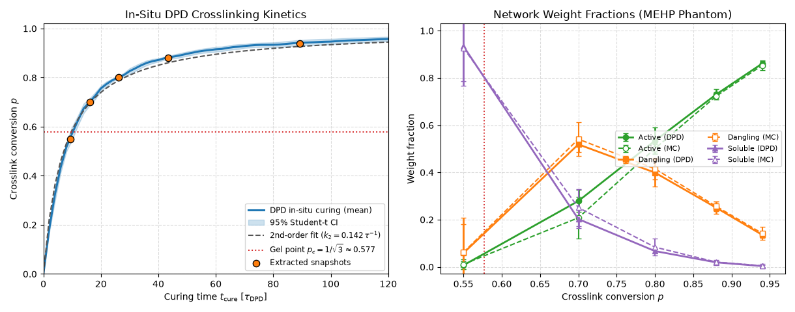
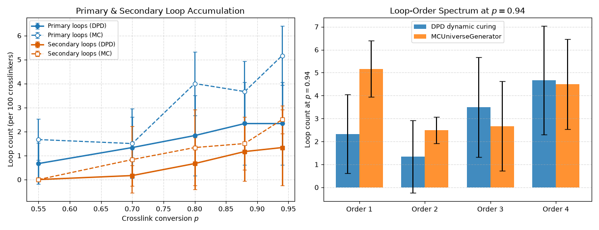
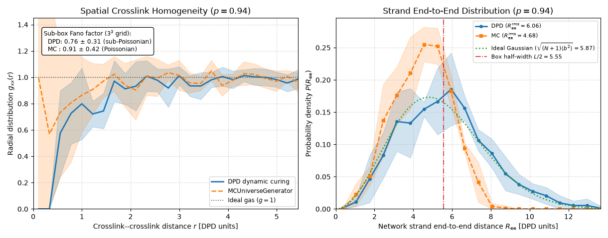
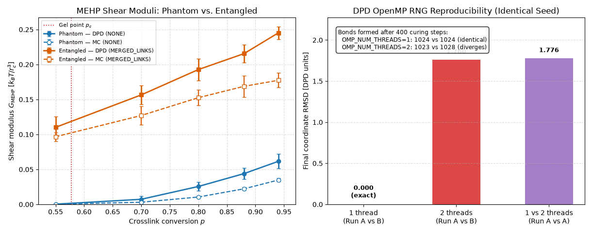

Note
Go to the end to download the full example code.
In-Situ DPD Dynamic Crosslinking vs. Instantaneous MC Network Synthesis¶
Polymer networks in pylimer-tools can be synthesized through two
fundamentally different pathways:
In-Situ Dynamic Crosslinking via
DPDSimulator(config_bond_formation(); Langeloth et al. [LMBohmMullerPlathe13], Schneider et al. [SFKarimiVarzanehMullerPlathe21]): an equilibrated precursor melt of bifunctional strands (\(N = 20\) beads, atom type1) and \(f = 4\) crosslinkers (atom type2) reacts dynamically whenever an unsaturated crosslinker and a strand end approach within a capture radius \(r_{\text{bond}} = 0.85\). Settingmax_bonds_per_atom_type={1: 2, 2: 4}automatically restricts bond formation to strand ends (which start with 1 bond) and unsaturated crosslinkers (which start with 0 bonds), while leaving interior strand beads (already degree 2) inert.Instantaneous Monte Carlo Synthesis via
MCUniverseGenerator(Gusev and Bernhard [GB24], Bernhard and Gusev [BG25]): crosslinkers are placed randomly (white noise) in the periodic box and strands are linked instantaneously to a target conversion \(p\) at matched \((N, p, r, \rho)\) and realized mean-squared bond length \(\langle b^2 \rangle\).
Here we compare both pathways across 6 independent random seeds at stoichiometric balance (\(r = 1.0\), \(N_{\text{xlinks}} = 100\), \(N_{\text{strands}} = 200\), \(\rho = 3.0\), \(L = 11.10\)) across conversions \(p \in [0.55, 0.70, 0.80, 0.88, 0.94]\), spanning the mean-field end-linking gel point \(p_c = 1/\sqrt{r(f - 1)} = 1/\sqrt{3} \approx 0.577\) (Macosko and Miller [MM76a], Miller and Macosko [MM76b]). We evaluate:
Curing kinetics \(p(t)\) and gelation weight fractions (\(w_{\text{active}}, w_{\text{dangling}}, w_{\text{soluble}}\)),
Topological loop spectra (orders 1–4 via
count_loop_lengths()),Spatial crosslink homogeneity (sub-box Fano factor \(\sigma_n^2 / \langle n \rangle\) and crosslink–crosslink radial distribution function \(g_{xx}(r)\)) and network strand end-to-end distance distributions \(P(R_{\text{ee}})\),
Mechanical equilibrium shear moduli (
MEHPSimulatorwithNONEandMERGED_LINKS), andKey DPD limitations: soft conservative repulsion (\(A = 25\)) allowing occasional strand crossings without slip-springs, and OpenMP multi-threaded RNG non-determinism (
OMP_NUM_THREADS=1vs.2).
from __future__ import annotations
from pathlib import Path
import sys
from typing import Any, Dict
import matplotlib.pyplot as plt
import numpy as np
import pandas as pd
if "__file__" in globals():
_examples_dir = str(Path(__file__).resolve().parents[1])
_dpd_dir = str(Path(__file__).resolve().parent)
for _p in (_examples_dir, _dpd_dir):
if _p not in sys.path:
sys.path.insert(0, _p)
else:
for _cand in (
Path.cwd() / "examples",
Path.cwd() / "examples" / "dpd_simulations",
Path.cwd().parent,
Path.cwd(),
):
if _cand.is_dir() and str(_cand) not in sys.path:
sys.path.insert(0, str(_cand))
from _dpd_curing_runner import run_dpd_curing_study # noqa: E402
from _example_cache import ( # noqa: E402
format_benchmark_footnote,
get_example_cache_path,
load_or_compute_cache,
)
Load Precomputed Ensemble Data¶
To keep documentation builds fast, the 6-seed DPD curing trajectories,
matched MCUniverseGenerator ensembles, MEHP evaluations, and OpenMP
determinism benchmark are loaded from a precomputed compressed archive.
Pass --recompute or set PYLIMER_RECOMPUTE_CACHE=1 to regenerate.
cache_path = get_example_cache_path(
"dpd_dynamic_curing_vs_mc_cache.npz", example_folder="dpd_simulations"
)
data: Dict[str, Any] = load_or_compute_cache(cache_path, run_dpd_curing_study)
n_seeds = int(data["n_seeds"])
n_xlinks = int(data["n_xlinks"])
n_strands = int(data["n_strands"])
strand_length = int(data["strand_length"])
f_xlink = int(data["f_xlink"])
box_l = float(data["box_l"])
b2_mean = float(data["b2_meas_mean"])
b2_ci = float(data["b2_meas_ci"])
c_inf_mean = float(data["c_inf_eff_mean"])
c_inf_ci = float(data["c_inf_eff_ci"])
p_vals = np.asarray(data["actual_p_mean"], dtype=float)
p_gel_mmt = 1.0 / np.sqrt(float(f_xlink - 1))
print(
f"System: {n_xlinks} f={f_xlink} crosslinkers + {n_strands} strands (N={strand_length}), "
f"L={box_l:.2f}, rho={float(data['rho_bead']):.1f}, {n_seeds} seeds"
)
print(
f"Equilibrated DPD melt: <b^2> = {b2_mean:.3f} +/- {b2_ci:.3f} "
f"(ideal 3kT/k = {3.0 / float(data['spring_k']):.3f}), "
f"C_inf_eff = {c_inf_mean:.3f} +/- {c_inf_ci:.3f}"
)
print(format_benchmark_footnote(data))
Loading cached example data from dpd_dynamic_curing_vs_mc_cache.npz...
System: 100 f=4 crosslinkers + 200 strands (N=20), L=11.10, rho=3.0, 6 seeds
Equilibrated DPD melt: <b^2> = 1.643 +/- 0.034 (ideal 3kT/k = 1.500), C_inf_eff = 1.066 +/- 0.082
Measured on: Apple M3 Pro (12 cores), 36 GB RAM, Mac15,7, macOS 27.2.1 (arm64), Python 3.13.18 (cached 2026-11-26).
1. Curing Kinetics & Gelation Weight Fractions¶
During DPD dynamic curing, bond formation initially proceeds rapidly as reactive strand ends encounter nearby crosslinkers, then slows markedly above \(p \gtrsim 0.85\) as unreacted functional groups become dilute and diffusion-limited within the emerging network.
Right below the mean-field end-linking gel point (\(p_c = 1/\sqrt{3} \approx 0.577\)), the soluble fraction dominates (\(w_{\text{sol}} \approx 0.93\)). Above \(p_c\), both DPD-cured and MC networks exhibit nearly identical active, dangling, and soluble weight fractions, with DPD showing a slightly higher active fraction at intermediate conversions (\(p = 0.70, 0.80\)) due to lower primary-loop waste.
t_cure = np.asarray(data["t_cure_grid"], dtype=float)
p_kin_mean = np.asarray(data["p_kinetics_mean"], dtype=float)
p_kin_lo = np.asarray(data["p_kinetics_ci_lower"], dtype=float)
p_kin_hi = np.asarray(data["p_kinetics_ci_upper"], dtype=float)
snap_t = np.asarray(data["snapshot_t_mean"], dtype=float)
# Fit an ideal second-order curve p(t) = (k2 * t) / (1 + k2 * t) to early times (t <= 25)
early_mask = (t_cure > 0.0) & (t_cure <= 25.0)
k2_est = float(
np.median(
p_kin_mean[early_mask] / ((1.0 - p_kin_mean[early_mask]) * t_cure[early_mask])
)
)
p_second_order = (k2_est * t_cure) / (1.0 + k2_est * t_cure)
fig, (ax1, ax2) = plt.subplots(1, 2, figsize=(12.2, 4.8))
# Left: Curing kinetics p(t)
ax1.plot(t_cure, p_kin_mean, color="#1f77b4", lw=2.2, label="DPD in-situ curing (mean)")
ax1.fill_between(
t_cure, p_kin_lo, p_kin_hi, color="#1f77b4", alpha=0.22, label="95% Student-t CI"
)
ax1.plot(
t_cure,
p_second_order,
color="#555555",
ls="--",
lw=1.5,
label=rf"2nd-order fit ($k_2 = {k2_est:.3f}\,\tau^{{-1}}$)",
)
ax1.axhline(
p_gel_mmt,
color="#d62728",
ls=":",
lw=1.4,
label=rf"Gel point $p_c = 1/\sqrt{{3}} \approx {p_gel_mmt:.3f}$",
)
ax1.scatter(
snap_t,
p_vals,
color="#ff7f0e",
edgecolor="black",
s=55,
zorder=5,
label="Extracted snapshots",
)
ax1.set_xlabel(r"Curing time $t_{\text{cure}}$ [$\tau_{\text{DPD}}$]")
ax1.set_ylabel(r"Crosslink conversion $p$")
ax1.set_title("In-Situ DPD Crosslinking Kinetics")
ax1.set_xlim(0.0, float(t_cure[-1]))
ax1.set_ylim(0.0, 1.02)
ax1.grid(True, linestyle="--", alpha=0.45)
ax1.legend(loc="lower right", fontsize=8.5)
# Right: Active / dangling / soluble weight fractions vs p
frac_specs = [
("w_active", "Active", "#2ca02c", "o"),
("w_dangling", "Dangling", "#ff7f0e", "s"),
("w_soluble", "Soluble", "#9467bd", "^"),
]
for field, label, color, marker in frac_specs:
ax2.errorbar(
p_vals,
data[f"dpd_{field}_mean"],
yerr=data[f"dpd_{field}_ci"],
color=color,
marker=marker,
lw=2.0,
capsize=3,
label=f"{label} (DPD)",
)
ax2.errorbar(
p_vals,
data[f"mc_{field}_mean"],
yerr=data[f"mc_{field}_ci"],
color=color,
marker=marker,
mfc="white",
ls="--",
lw=1.5,
capsize=3,
label=f"{label} (MC)",
)
ax2.axvline(p_gel_mmt, color="#d62728", ls=":", lw=1.3)
ax2.set_xlabel(r"Crosslink conversion $p$")
ax2.set_ylabel("Weight fraction")
ax2.set_title("Network Weight Fractions (MEHP Phantom)")
ax2.set_xlim(0.52, 0.97)
ax2.set_ylim(-0.03, 1.03)
ax2.grid(True, linestyle="--", alpha=0.45)
ax2.legend(ncol=2, fontsize=8.0, loc="center right")
plt.tight_layout()
plt.show()

2. Topological Loop Spectrum: DPD vs. MCUniverseGenerator¶
Using count_loop_lengths(), we decompose
network cycles into loop orders \(k = 1, 2, 3, 4\) (primary, secondary,
tertiary, quaternary), where each loop of order \(k\) contains
\(k(N + 1)\) atoms.
Interestingly, in-situ DPD curing produces fewer primary and secondary
loops than matched-box MC synthesis (at \(p = 0.94\):
\(2.3 \pm 1.2\) vs. \(5.2 \pm 1.9\) primary loops per 100
crosslinkers). Two physical effects drive this difference:
(i) soft repulsive DPD forces (\(A = 25\)) swell chains slightly
(\(C_\infty^{\text{eff}} \approx 1.07\)) and create a depletion shell
around crosslinkers, lowering the probability that a strand returns to the
same or an immediately adjacent crosslinker; and
(ii) in a periodic box with \(L/2 = 5.55 \lesssim \sqrt{(N+1)\langle b^2\rangle} = 5.87\),
MCUniverseGenerator links crosslinkers via minimum-image distances,
slightly biasing it toward shorter/self-returning pairs.
loop_orders = np.asarray(data["loop_orders"], dtype=int)
dpd_loops_mean = np.asarray(data["dpd_loops_mean"], dtype=float)
dpd_loops_ci = np.asarray(data["dpd_loops_ci"], dtype=float)
mc_loops_mean = np.asarray(data["mc_loops_mean"], dtype=float)
mc_loops_ci = np.asarray(data["mc_loops_ci"], dtype=float)
fig, (ax1, ax2) = plt.subplots(1, 2, figsize=(12.2, 4.7))
# Left: Primary (order 1) and Secondary (order 2) loops vs conversion
ax1.errorbar(
p_vals,
dpd_loops_mean[:, 0],
yerr=dpd_loops_ci[:, 0],
color="#1f77b4",
marker="o",
lw=2.0,
capsize=3,
label="Primary loops (DPD)",
)
ax1.errorbar(
p_vals,
mc_loops_mean[:, 0],
yerr=mc_loops_ci[:, 0],
color="#1f77b4",
marker="o",
mfc="white",
ls="--",
lw=1.6,
capsize=3,
label="Primary loops (MC)",
)
ax1.errorbar(
p_vals,
dpd_loops_mean[:, 1],
yerr=dpd_loops_ci[:, 1],
color="#d95f02",
marker="s",
lw=2.0,
capsize=3,
label="Secondary loops (DPD)",
)
ax1.errorbar(
p_vals,
mc_loops_mean[:, 1],
yerr=mc_loops_ci[:, 1],
color="#d95f02",
marker="s",
mfc="white",
ls="--",
lw=1.6,
capsize=3,
label="Secondary loops (MC)",
)
ax1.set_xlabel(r"Crosslink conversion $p$")
ax1.set_ylabel(f"Loop count (per {n_xlinks} crosslinkers)")
ax1.set_title("Primary & Secondary Loop Accumulation")
ax1.grid(True, linestyle="--", alpha=0.45)
ax1.legend(loc="upper left", fontsize=8.5)
# Right: Loop order spectrum at p = 0.94
x_pos = np.arange(len(loop_orders), dtype=float)
bar_w = 0.36
ax2.bar(
x_pos - bar_w / 2.0,
dpd_loops_mean[-1],
width=bar_w,
yerr=dpd_loops_ci[-1],
capsize=4,
color="#1f77b4",
alpha=0.85,
label="DPD dynamic curing",
)
ax2.bar(
x_pos + bar_w / 2.0,
mc_loops_mean[-1],
width=bar_w,
yerr=mc_loops_ci[-1],
capsize=4,
color="#ff7f0e",
alpha=0.85,
label="MCUniverseGenerator",
)
ax2.set_xticks(x_pos)
ax2.set_xticklabels([f"Order {k}" for k in loop_orders])
ax2.set_ylabel(f"Loop count at $p = {p_vals[-1]:.2f}$")
ax2.set_title(rf"Loop-Order Spectrum at $p = {p_vals[-1]:.2f}$")
ax2.grid(True, axis="y", linestyle="--", alpha=0.45)
ax2.legend(fontsize=9.0)
plt.tight_layout()
plt.show()

3. Spatial Crosslink Homogeneity & Strand End-to-End Conformations¶
Beyond connectivity, dynamic DPD curing leaves a distinct spatial and conformational fingerprint compared to ideal-gas MC placement:
Crosslink homogeneity: Soft repulsive DPD forces (\(A = 25\)) carve a clear depletion hole in the crosslink–crosslink radial distribution function \(g_{xx}(r)\) for \(r \lesssim 0.6\) and suppress sub-box count fluctuations to a sub-Poissonian Fano factor (\(\sigma_n^2 / \langle n \rangle \approx 0.76 < 1\)), whereas white-noise MC crosslinkers exhibit \(g_{xx}(r) \approx 1\) down to \(r \to 0\) and a Poissonian Fano factor (\(\approx 1.0\)).
Strand end-to-end distances \(P(R_{\text{ee}})\): In DPD, strands equilibrate and wind freely across periodic boundaries, recovering the untruncated Gaussian distribution with \(R_{\text{ee}}^{\text{rms}} \approx 6.06\) (close to \(\sqrt{(N+1) C_\infty^{\text{eff}} \langle b^2 \rangle} \approx 6.07\)). In
MCUniverseGenerator, candidate crosslink pairs are evaluated via minimum-image distances, which truncates the upper tail of \(P(R_{\text{ee}})\) when \(L/2 = 5.55 \lesssim R_{\text{ee}}^{\text{rms}}\) and compresses \(R_{\text{ee}}^{\text{rms}}\) to \(\approx 4.68\).
r_grid = np.asarray(data["rdf_centers"], dtype=float)
dpd_gxx = np.asarray(data["dpd_g_xx_final_mean"], dtype=float)
dpd_gxx_ci = np.asarray(data["dpd_g_xx_final_ci"], dtype=float)
mc_gxx = np.asarray(data["mc_g_xx_final_mean"], dtype=float)
mc_gxx_ci = np.asarray(data["mc_g_xx_final_ci"], dtype=float)
ree_grid = np.asarray(data["ree_centers"], dtype=float)
dpd_ree_h = np.asarray(data["dpd_ree_hist_final_mean"], dtype=float)
dpd_ree_h_ci = np.asarray(data["dpd_ree_hist_final_ci"], dtype=float)
mc_ree_h = np.asarray(data["mc_ree_hist_final_mean"], dtype=float)
mc_ree_h_ci = np.asarray(data["mc_ree_hist_final_ci"], dtype=float)
# Ideal 3D Gaussian end-to-end distance PDF using R0^2 = (N + 1) * <b^2>
r_dense = np.linspace(0.0, float(ree_grid[-1]), 200)
r0_sq_ideal = float(strand_length + 1) * b2_mean
p_gauss_ideal = (
4.0
* np.pi
* (r_dense**2)
* ((3.0 / (2.0 * np.pi * r0_sq_ideal)) ** 1.5)
* np.exp(-1.5 * (r_dense**2) / r0_sq_ideal)
)
fig, (ax1, ax2) = plt.subplots(1, 2, figsize=(12.2, 4.8))
# Left: g_xx(r) with Fano factor summary box
ax1.plot(r_grid, dpd_gxx, color="#1f77b4", lw=2.0, label="DPD dynamic curing")
ax1.fill_between(
r_grid,
np.maximum(0.0, dpd_gxx - dpd_gxx_ci),
dpd_gxx + dpd_gxx_ci,
color="#1f77b4",
alpha=0.22,
)
ax1.plot(r_grid, mc_gxx, color="#ff7f0e", lw=1.8, ls="--", label="MCUniverseGenerator")
ax1.fill_between(
r_grid,
np.maximum(0.0, mc_gxx - mc_gxx_ci),
mc_gxx + mc_gxx_ci,
color="#ff7f0e",
alpha=0.20,
)
ax1.axhline(1.0, color="#555555", ls=":", lw=1.2, label="Ideal gas ($g = 1$)")
ax1.set_xlabel(r"Crosslink--crosslink distance $r$ [DPD units]")
ax1.set_ylabel(r"Radial distribution $g_{xx}(r)$")
ax1.set_title(rf"Spatial Crosslink Homogeneity ($p = {p_vals[-1]:.2f}$)")
ax1.set_xlim(0.0, float(r_grid[-1]))
ax1.set_ylim(0.0, 1.45)
ax1.grid(True, linestyle="--", alpha=0.45)
ax1.legend(loc="lower right", fontsize=8.5)
fano_dpd = float(data["dpd_fano_mean"][-1])
fano_dpd_ci = float(data["dpd_fano_ci"][-1])
fano_mc = float(data["mc_fano_mean"][-1])
fano_mc_ci = float(data["mc_fano_ci"][-1])
ax1.text(
0.04,
0.94,
(
"Sub-box Fano factor ($3^3$ grid):\n"
f" DPD: {fano_dpd:.2f} ± {fano_dpd_ci:.2f} (sub-Poissonian)\n"
f" MC : {fano_mc:.2f} ± {fano_mc_ci:.2f} (Poissonian)"
),
transform=ax1.transAxes,
va="top",
fontsize=8.5,
bbox={"boxstyle": "round,pad=0.35", "facecolor": "white", "alpha": 0.9},
)
# Right: Strand end-to-end distance PDF P(R_ee)
ax2.plot(
ree_grid,
dpd_ree_h,
color="#1f77b4",
lw=2.0,
marker="o",
ms=4,
label=rf"DPD ($R_{{\text{{ee}}}}^{{\text{{rms}}}} = {float(data['dpd_ree_rms_mean'][-1]):.2f}$)",
)
ax2.fill_between(
ree_grid,
np.maximum(0.0, dpd_ree_h - dpd_ree_h_ci),
dpd_ree_h + dpd_ree_h_ci,
color="#1f77b4",
alpha=0.20,
)
ax2.plot(
ree_grid,
mc_ree_h,
color="#ff7f0e",
lw=1.8,
ls="--",
marker="s",
ms=4,
label=rf"MC ($R_{{\text{{ee}}}}^{{\text{{rms}}}} = {float(data['mc_ree_rms_mean'][-1]):.2f}$)",
)
ax2.fill_between(
ree_grid,
np.maximum(0.0, mc_ree_h - mc_ree_h_ci),
mc_ree_h + mc_ree_h_ci,
color="#ff7f0e",
alpha=0.18,
)
ax2.plot(
r_dense,
p_gauss_ideal,
color="#2ca02c",
ls=":",
lw=1.8,
label=rf"Ideal Gaussian ($\sqrt{{(N+1)\langle b^2\rangle}} = {np.sqrt(r0_sq_ideal):.2f}$)",
)
ax2.axvline(
0.5 * box_l,
color="#d62728",
ls="-.",
lw=1.2,
label=rf"Box half-width $L/2 = {0.5 * box_l:.2f}$",
)
ax2.set_xlabel(r"Network strand end-to-end distance $R_{\text{ee}}$ [DPD units]")
ax2.set_ylabel(r"Probability density $P(R_{\text{ee}})$")
ax2.set_title(rf"Strand End-to-End Distribution ($p = {p_vals[-1]:.2f}$)")
ax2.set_xlim(0.0, float(ree_grid[-1]))
ax2.set_ylim(0.0, None)
ax2.grid(True, linestyle="--", alpha=0.45)
ax2.legend(loc="upper right", fontsize=8.2)
plt.tight_layout()
plt.show()

4. MEHP Shear Moduli & DPD Practical Limitations¶
We evaluate the equilibrium shear modulus using
MEHPSimulator (Gusev [Gus19],
Bernhard and Gusev [BG25]) in both the phantom limit
(NONE) and the entangled limit
(MERGED_LINKS with 5% randomly
sampled entanglements). Because DPD-cured strands are untruncated across
periodic boundaries and have fewer primary loops than matched-box MC
networks, DPD-cured networks yield consistently higher phantom and entangled
shear moduli across the entire post-gel conversion range.
Two important DPD limitations to keep in mind:
Soft conservative repulsion (:math:`A = 25`): unlike hard-core Kremer–Grest bead-spring MD, the soft DPD pair potential \(F_C(r) = A(1 - r/r_c)\) remains finite at \(r = 0\), allowing occasional chain-chain crossings during curing when run without slip-springs. Topological entanglements must therefore be modeled explicitly via DPD slip-springs (Langeloth et al. [LMBohmMullerPlathe13], Schneider et al. [SFKarimiVarzanehMullerPlathe21]) or post-curing MEHP entanglement sampling (Gusev and Schwarz [GS19]).
OpenMP multi-threaded RNG non-determinism: even with an identical initial configuration and random seed, running
DPDSimulatorwithOMP_NUM_THREADS > 1produces non-deterministic trajectories and bond counts due to parallel thread scheduling of pairwise random forces. SettingOMP_NUM_THREADS=1guarantees bit-for-bit reproducibility (zero coordinate RMSD and identical bond count across repeated runs), as verified in the right panel below.
fig, (ax1, ax2) = plt.subplots(1, 2, figsize=(12.2, 4.8))
# Left: MEHP phantom and entangled moduli vs p
ax1.errorbar(
p_vals,
data["dpd_g_phantom_mean"],
yerr=data["dpd_g_phantom_ci"],
color="#1f77b4",
marker="o",
lw=2.0,
capsize=3,
label="Phantom — DPD (NONE)",
)
ax1.errorbar(
p_vals,
data["mc_g_phantom_mean"],
yerr=data["mc_g_phantom_ci"],
color="#1f77b4",
marker="o",
mfc="white",
ls="--",
lw=1.6,
capsize=3,
label="Phantom — MC (NONE)",
)
ax1.errorbar(
p_vals,
data["dpd_g_entangled_mean"],
yerr=data["dpd_g_entangled_ci"],
color="#d95f02",
marker="s",
lw=2.0,
capsize=3,
label="Entangled — DPD (MERGED_LINKS)",
)
ax1.errorbar(
p_vals,
data["mc_g_entangled_mean"],
yerr=data["mc_g_entangled_ci"],
color="#d95f02",
marker="s",
mfc="white",
ls="--",
lw=1.6,
capsize=3,
label="Entangled — MC (MERGED_LINKS)",
)
ax1.axvline(p_gel_mmt, color="#d62728", ls=":", lw=1.3, label=r"Gel point $p_c$")
ax1.set_xlabel(r"Crosslink conversion $p$")
ax1.set_ylabel(r"Shear modulus $G_{\text{MEHP}}$ [$k_B T / r_c^3$]")
ax1.set_title("MEHP Shear Moduli: Phantom vs. Entangled")
ax1.set_xlim(0.52, 0.97)
ax1.set_ylim(0.0, None)
ax1.grid(True, linestyle="--", alpha=0.45)
ax1.legend(loc="upper left", fontsize=8.2)
# Right: OpenMP determinism check (1-thread vs 2-thread identical seed)
omp_1t_bonds = np.asarray(data["omp_1t_bonds"], dtype=int)
omp_2t_bonds = np.asarray(data["omp_2t_bonds"], dtype=int)
rmsd_1t = float(data["omp_1t_coord_rmsd"])
rmsd_2t = float(data["omp_2t_coord_rmsd"])
rmsd_1v2 = float(data["omp_1t_vs_2t_coord_rmsd"])
labels_omp = [
"1 thread\n(Run A vs B)",
"2 threads\n(Run A vs B)",
"1 vs 2 threads\n(Run A vs A)",
]
rmsd_vals = [rmsd_1t, rmsd_2t, rmsd_1v2]
colors_omp = ["#2ca02c", "#d62728", "#9467bd"]
bars = ax2.bar(labels_omp, rmsd_vals, color=colors_omp, alpha=0.85, width=0.52)
for bar, val in zip(bars, rmsd_vals):
ax2.text(
bar.get_x() + bar.get_width() / 2.0,
val + 0.06,
f"{val:.3f}" if val > 0.0 else "0.000\n(exact)",
ha="center",
va="bottom",
fontsize=9.0,
fontweight="bold",
)
ax2.set_ylabel("Final coordinate RMSD [DPD units]")
ax2.set_title("DPD OpenMP RNG Reproducibility (Identical Seed)")
ax2.set_ylim(0.0, max(rmsd_vals) * 1.28)
ax2.grid(True, axis="y", linestyle="--", alpha=0.45)
ax2.text(
0.04,
0.94,
(
"Bonds formed after 400 curing steps:\n"
f" OMP_NUM_THREADS=1: {omp_1t_bonds[0]} vs {omp_1t_bonds[1]} (identical)\n"
f" OMP_NUM_THREADS=2: {omp_2t_bonds[0]} vs {omp_2t_bonds[1]} (diverges)"
),
transform=ax2.transAxes,
va="top",
fontsize=8.5,
bbox={"boxstyle": "round,pad=0.35", "facecolor": "white", "alpha": 0.9},
)
plt.tight_layout()
plt.show()

Summary Table¶
Quantitative comparison of DPD dynamic curing vs. MCUniverseGenerator
across all five conversion snapshots (mean across 6 seeds).
summary_df = pd.DataFrame(
{
"p": np.round(p_vals, 2),
"t_cure": np.round(snap_t, 1),
"Loops(1) DPD": np.round(dpd_loops_mean[:, 0], 2),
"Loops(1) MC": np.round(mc_loops_mean[:, 0], 2),
"Fano DPD": np.round(data["dpd_fano_mean"], 2),
"Fano MC": np.round(data["mc_fano_mean"], 2),
"R_ee DPD": np.round(data["dpd_ree_rms_mean"], 2),
"R_ee MC": np.round(data["mc_ree_rms_mean"], 2),
"G_ph DPD": np.round(data["dpd_g_phantom_mean"], 4),
"G_ph MC": np.round(data["mc_g_phantom_mean"], 4),
"G_ent DPD": np.round(data["dpd_g_entangled_mean"], 4),
"G_ent MC": np.round(data["mc_g_entangled_mean"], 4),
}
)
print(summary_df.to_string(index=False))
p t_cure Loops(1) DPD Loops(1) MC Fano DPD Fano MC R_ee DPD R_ee MC G_ph DPD G_ph MC G_ent DPD G_ent MC
0.55 9.4 0.67 1.67 0.81 1.04 6.06 4.47 0.0003 0.0002 0.1102 0.0967
0.70 16.2 1.33 1.50 0.62 1.08 6.01 4.69 0.0073 0.0031 0.1565 0.1271
0.80 26.2 1.83 4.00 0.61 0.93 6.06 4.63 0.0256 0.0105 0.1927 0.1525
0.88 43.3 2.33 3.67 0.76 1.07 6.11 4.59 0.0440 0.0222 0.2155 0.1688
0.94 89.2 2.33 5.17 0.76 0.91 6.06 4.68 0.0615 0.0348 0.2451 0.1774
Total running time of the script: (0 minutes 0.889 seconds)